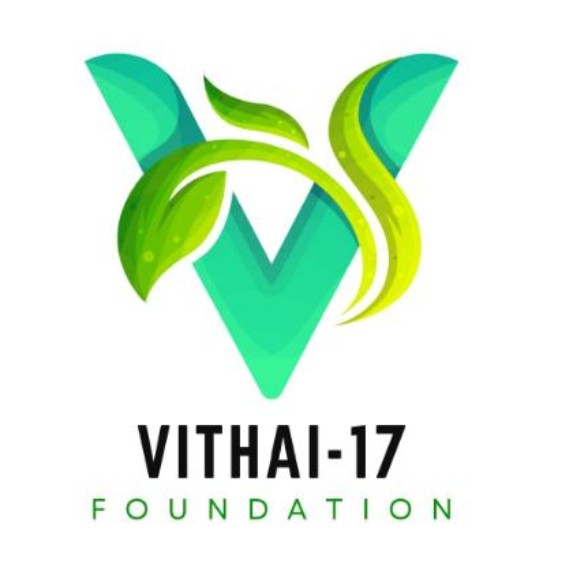

About
I am P S Senthil Srinivas, a dedicated engineer with a strong commitment to sustainable development and a passion for continuous learning. My journey in engineering has been marked by a desire to explore and master various fields, enabling me to make meaningful contributions to the industry and society.
s
With experience as a Research and Development Engineer at Genik Technologies, I have engaged deeply in research and academic publications, honing my expertise in the field. Currently, I am enhancing my technical skills with C++ and expanding my proficiency in Linux to stay at the forefront of technological advancements.
Experience

Research and Development
During my tenure as an R&D intern, I made substantial contributions to 'Rearticle,' an academic publishing software designed as a typesetting no-code platform that leverages the power of LaTeX for paper formatting. My key contributions include:
- Development of LaTeX Graphing Block: I engineered a LaTeX block specifically for graph creation, enhancing the software's capability to generate complex visualizations.
- Collection of LaTeX Symbols: I curated and integrated a comprehensive library of 700 LaTeX equation symbols, significantly expanding the software’s functionality and versatility.
- Market Analysis Contribution: I participated in market analysis efforts to better understand the competitive landscape and user needs, aiding in strategic decision-making for the software’s development.
- User Guide Structuring: I meticulously structured and refined the user guide, ensuring clarity and ease of use for end-users.
- Documentation Improvement: I improved the Help and Support section of the website, providing clearer and more effective English documentation to enhance user experience and support.
These contributions collectively enhanced the software’s performance and usability, positioning it as a more robust tool for researchers.

Founder
I am leading an NGO comprised of 25 dedicated young professionals, all of whom are committed to advancing sustainable development goals. Our organization actively conducts a variety of workshops and events aimed at promoting sustainability and education.
I served as an Aptitude Trainer for the SkillUp-1.0 initiative, contributing to the development and delivery of essential training programs.
Our team is also closely collaborating with “Your House Our House,” an old age home that accommodates 11-13 elderly residents. We are working diligently to improve the home’s environment and enhance its overall appeal.
Projects
Automata Bin
I designed an automated dustbin for waste segregation, utilizing a deep learning Convolutional Neural Network (CNN) algorithm to differentiate between biodegradable and non-biodegradable waste. The system was integrated with an Arduino UNO and various sensors to create a fully functional waste management solution. This work was presented and published at the IEEE Conference 2023 on Intelligent Computing and Control for Engineering and Business Systems (ICCEBS).
Patent Application Number : 202441063644
Check Patent Application Status here click here
Voice Prosthetic for Voiceless
I developed a prosthetic tool designed to detect voice disorders at an early stage by leveraging the power of Python and MATLAB for in-depth analysis. The tool generates detailed reports, facilitating non-invasive and expedited diagnosis. This innovative approach aims to improve early detection and treatment outcomes for individuals with voice disorders, enhancing both the efficiency and accuracy of diagnostic procedures.